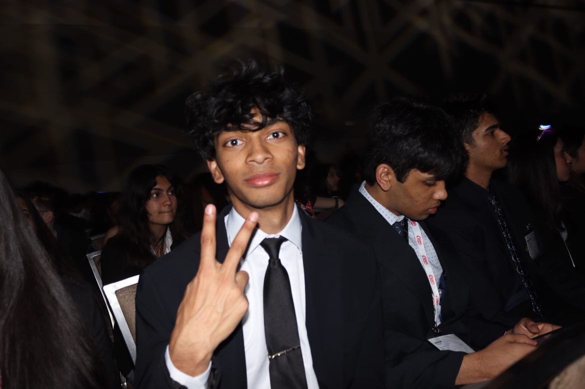

THE PERSON BEHIND THE FILES
Atharva
Naveen.
I’m a student at Wylie High School in Texas. I co-founded Descreened with Ahmed Farooqui, competed in DECA and BPA, and keep coming back to questions about money, technology, and how people spend their time.

Where to start
Descreened grew out of a conversation about the time we spend looking down at our phones. The team now runs discussions, events, and screen-free activities. My DECA file is about the competition and the people around it. I also keep two essays here, exactly as I wrote them.
There is a BPA competition record and a hackathon project in the archive too.